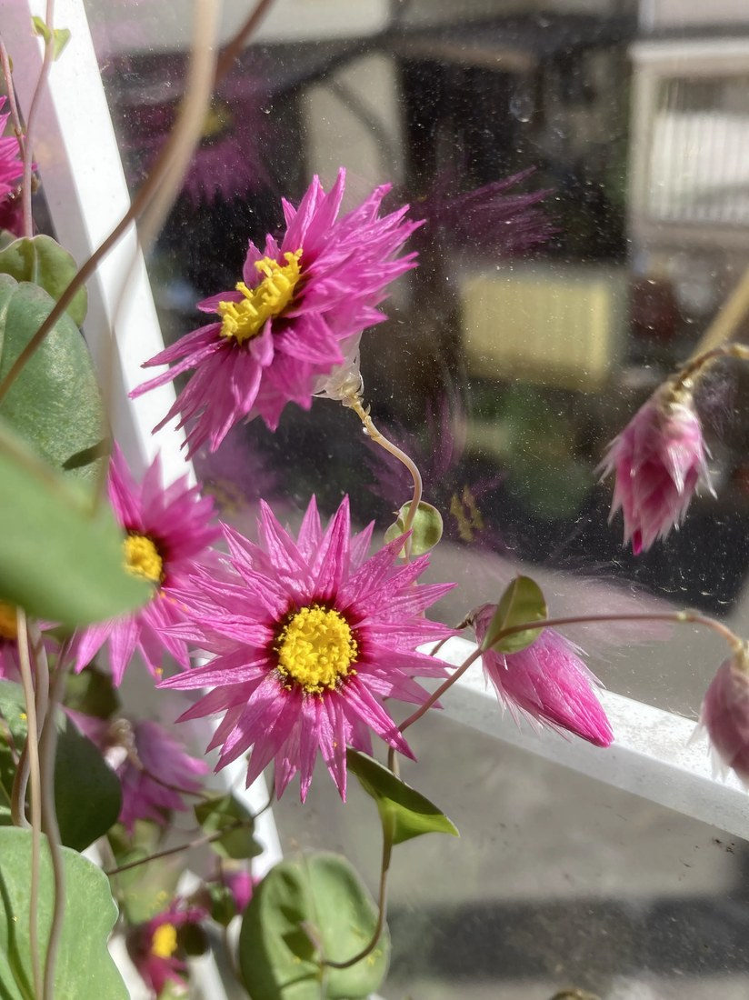
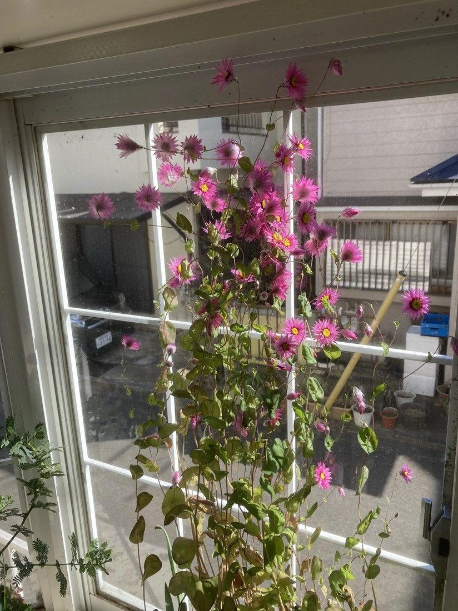

地図を読み込んでいるよ…
🔍 写真も地図も、押しているあいだ拡大して見られるよ（スマホは指を置いてすこし待ってね）。
🌍 の地図＝この子がもともと自生している場所を緑に。オーストラリア南西部（西オーストラリア）の砂地・草地が原産。日本では観賞用・ドライフラワー用に育てられる一年草。りょうさんの窓辺の鉢。
⭐オーストラリア南西部（西オーストラリア）が原産——砂地や草地に生える一年草。⚠地図はオーストラリア全体を塗っているけど、もとは南西部のごく一部の地域だけの子だよ。⚠日本は塗っていない——この子は観賞用・ドライフラワー用に育てられている外来の園芸植物で、日本はふるさとじゃない（りょうさんの窓辺の鉢で咲いていた）。⭐乾いた砂地の生まれだから、日なたと水はけを好むよ。
⚠ 地図は国（日本と中国だけ県・省）までしか塗れないから、ほんとうの分布より広く見えていることがあるよ。地図はだいたいの場所。正確なところは、上の文を見てね。
ローダンセ（マングレシー）
Rhodanthe manglesii
別名 · マングルスエバーラスティング／英名 pink sunray・Australian strawflower／ 原産 · オーストラリア南西部／ 見どころ · ⭐“花びら”は乾いた紙質の総苞・ドライフラワーになる
キク科 · Asteraceae（ローダンセ属 Rhodanthe）── ハハコグサ連（紙質総苞のエバーラスティング）・キク目
燻太さんの見立て「パッと見はキク科っぽいけど、見たことがないな。花弁の和紙みたいな質感も気になる。」──科も質感も的中。和紙の正体は“乾いた総苞片”だよ。
名前と学名の由来 ── Rhodanthe は「バラ色の花」
- ⭐属名 Rhodanthe（ローダンセ） は、ギリシャ語 rhodon（バラ）＋ anthos（花）＝「バラ色の花」。あのピンクの花色そのままの名前だよ。
- ⭐種小名 manglesii は、1834年に西オーストラリアから種子をイギリスへ持ち帰った、ジェームズ・マングルス（James Mangles）にちなむ。📌115 アルストロメリア・117 トレニア・121 クレオメに続く、「“植物にかかわった人”の名が学名になった」仲間だね。
- ⭐和名「ローダンセ」＝属名の音（園芸名）。英名のpink sunray（ピンクの陽ざし）・everlasting（永遠に咲く＝ドライフラワー）・Australian strawflower（オーストラリアの麦わら菊）が、この花の魅力をよく表しているよ。
この植物のこと
- キク科ローダンセ属の一年草。⭐ハハコグサ連（Gnaphalieae）＝ムギワラギクやハハコグサと同じ、紙質の総苞をもつ“エバーラスティング（ドライフラワーになる花）”の仲間だよ。
- ⭐⭐⭐いちばんの秘密＝“花びら”は、花びらじゃない：ピンクの尖った部分は、乾いた紙質の「総苞片（そうほうへん・phyllaries）」。だから和紙みたいで、乾かしても色と形が残る（＝ドライフラワー）。⭐ほんとうの花は、中心の黄色い部分に集まった、小さな筒状花たち。燻太さんの「花弁が和紙みたいな質感」が、この正体をそのまま言い当てているんだ。
- ⭐図鑑の「花に見えて、花じゃない」連載の新メンバー：025 ドクダミの白い十字（総苞）、029 コエビソウの海老の殻（苞）、089 ハツユキカズラの三色（葉）…そして今回は「乾いた総苞（紙の苞）」が花のふりをしているよ。
- ⭐ハート形で、茎を抱くまるい葉（粉青色）＋うつむく銀色の蕾＝ローダンセの目印。蕾のうちはうなだれて、咲くと上を向く。写真の、茎を抱くまるい葉とうつむいた蕾が、それだよ。
- 西オーストラリアの砂地生まれ＝日なた・水はけ・乾燥を好む。じめじめした梅雨が苦手。
コラム ── 「花に見えて、花じゃない」／ドライフラワーのしくみ
- 🌼キク科の“花”は、小さな花の集まり（頭花）。118 ノアザミや098 ブタクサと同じで、たくさんの筒状花・舌状花が集まって、ひとつの花に見える。
- 📄ローダンセの「花びら」は、その舌状花ですらなく、“総苞片（苞）”。花の外側を守る葉のような部分が、乾いて膜のように薄くなり、色づいて、花びらのふりをしている。だから紙のよう。
- ♾️だから「エバーラスティング（永遠に咲く）」：生きた花びらは枯れてしぼむけれど、乾いた総苞は、色も形もそのまま保つ。だから、切って吊るすだけでドライフラワーの王様になる。英名 timeless rose（時を止めるバラ）も、ここから。
- ——花びらのふりをするのは、萼だったり、総苞だったり、苞だったり、葉だったり。植物は「目立ちたいとき」、いろんな部分を花に変身させる。おまけのムギワラギクも、同じ“紙の総苞”の仲間だよ。
同定について
- ⭐紙質の尖った総苞＋中心の黄色い筒状花＋ハート形で茎を抱くまるい葉＋うつむく蕾——この組み合わせは、ローダンセ（Rhodanthe manglesii）ならでは。
- ⭐⭐燻太さんの「キク科っぽいけど、見たことない」「花弁が和紙みたいな質感」＝科も、質感も、両方的中。キク科で合っていて、和紙の手ざわりは“乾いた総苞片”だったから当然。そして「見たことない」も正しい——オーストラリア生まれの、日本ではちょっと珍しい子だよ。
物語 ── りょうさんの窓辺、春の光
参考：Wikipedia「Rhodanthe manglesii」（キク科・西オーストラリア原産／中心の黄色い筒状花を、ばら色または白の紙質の総苞片が囲む／うつむく銀色の蕾／乾かしても色と形が残る）／Australian Native Plants Society「Rhodanthe manglesii」（ハート形で茎を抱く葉・エバーラスティングデイジー・1834年に James Mangles が種子を採取）